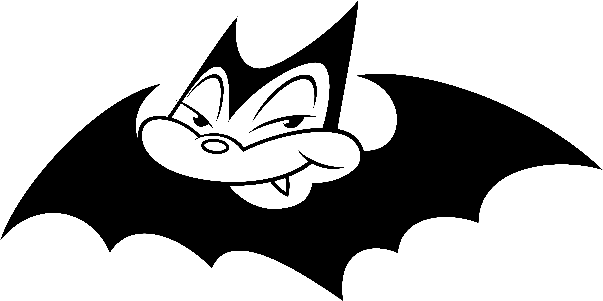

Monster
A gripping psychological thriller about a doctor chasing a serial killer he once saved.
View on MyAnimeListLegendary Manga Artist



Naoki Urasawa is a renowned Japanese manga artist, known for works like Monster, 20th Century Boys, Pluto, and Happy!. His storytelling and art have influenced manga worldwide.
A gripping psychological thriller about a doctor chasing a serial killer he once saved.
View on MyAnimeListA nostalgic yet suspenseful story about childhood friends fighting a mysterious cult threatening the world.
View on MyAnimeListA dark reimagining of Astro Boy’s “The Greatest Robot on Earth” arc, blending mystery and sci-fi.
View on MyAnimeListA heartfelt story about a former baseball player’s struggle to reconnect with his daughter.
View on MyAnimeList"Manga is a way to express the soul." – Naoki Urasawa
"Storytelling is the heart of manga." – Naoki Urasawa